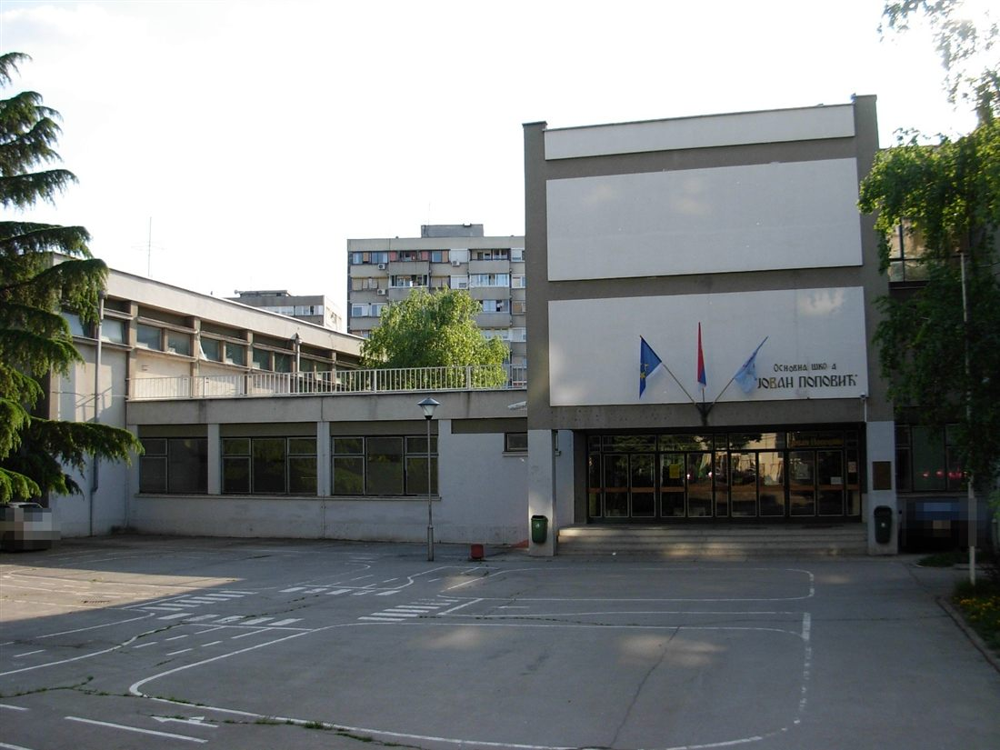

NAŠ KRAJ · ŠKOLA
OŠ "Jovan Popović": škola u kojoj je odrastao Liman
Ako ste odrasli na Limanu 2, velika je verovatnoća da ste bar jednom u životu kasnili na prvi čas u Ravaničkoj ulici. Osnovna škola "Jovan Popović" za mnoge komšije nije samo zgrada. To je mesto gde su naučili da čitaju, prvi put se zaljubili, igrali fudbal posle nastave i dobili prvu jedinicu koju su krili od roditelja.
Škola je osnovana 1960. godine, kada je Liman tek nicao na nekadašnjem močvarnom terenu uz Dunav, koji se od 1945. nasipao peskom. Nastava je počela u staroj školskoj zgradi na Limanu 1, u ulici dr Ilije Đuričića 2. Te prve godine škola je imala oko 180 učenika u šest odeljenja i šest nastavnika.
Kako su na Limanu nicali soliteri i blokovi, dece je bilo sve više, pa je stara zgrada postala tesna. Zato je započeta gradnja nove, a 1975. godine škola se uselila u Ravaničku ulicu na Limanu 2. Od tada ima dve zgrade: Veliku školu u Ravaničkoj 2 i Malu školu u ulici dr Ilije Đuričića 2, gde i danas idu prvaci i drugaci.

Danas škola ima 22 specijalizovane učionice, sportsku dvoranu i otvorene terene. Neka odeljenja imaju dvojezičnu nastavu na srpskom i ruskom jeziku.
Ime je dobila po Jovanu Popoviću, piscu i pesniku iz Kikinde, rođenom 1905. godine. Popović se 1941. pridružio partizanima, posle rata postao član Srpske akademije nauka i umetnosti, a umro je 1952. godine u Beogradu, sa samo 46 godina.
Škola ima i svoju manje zvaničnu istoriju. Za nju se u gradu kaže da su je pohađali mnogi novosadski pankeri, a dvorište tik uz nju generacije znaju pod imenom "Bronx". Tu su se igrale prve utakmice, svirale prve gitare i dogovarale prve žurke.
Za Liman 2 škola je i danas ono što je bila pre pola veka: mesto gde se komšije sreću ispred kapije, roditelji čekaju decu, a deca prave uspomene koje će jednog dana pričati svojoj deci.
Išli ste u "Jovan Popović"? Pošaljite nam sliku sa đačke ekskurzije, odeljensku fotografiju ili sećanje na učitelja koga nikad niste zaboravili.
Pošalji fotografiju ili sećanje